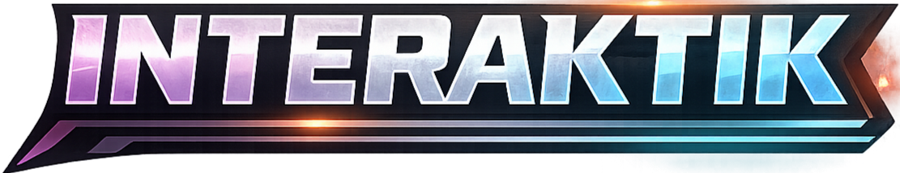

Quienes Somos
Somos un proyecto enfocado en experiencias de entretenimiento en vivo. Ayudamos a streamers a hacer sus transmisiones mas dinamicas, competitivas y memorables.

TikTok Live + Gamificación
PlayTik Live es una plataforma para creadores y hosts que transforma regalos de TikTok en dinamicas de juego en tiempo real: equipos, torres de puntaje y reglas personalizadas.
Somos un proyecto enfocado en experiencias de entretenimiento en vivo. Ayudamos a streamers a hacer sus transmisiones mas dinamicas, competitivas y memorables.
La plataforma permite asignar regalos a equipos, sumar puntos automaticamente y visualizar resultados en un marcador visual pensado para lives y batallas.
Crear una base de juegos interactivos de TikTok que puedas escalar: mas modos de juego, autenticacion de usuarios y gestion centralizada en base de datos.